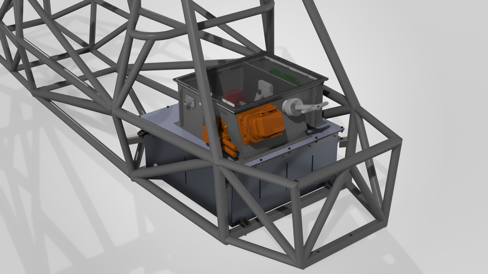
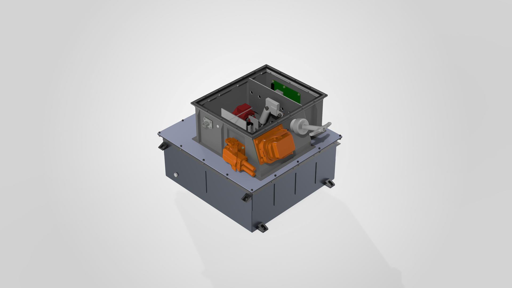
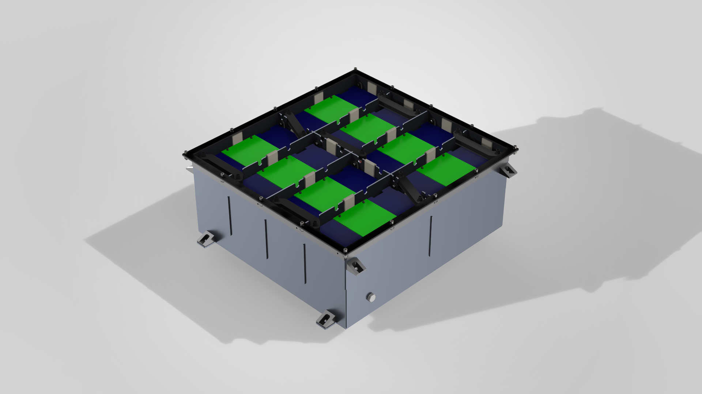
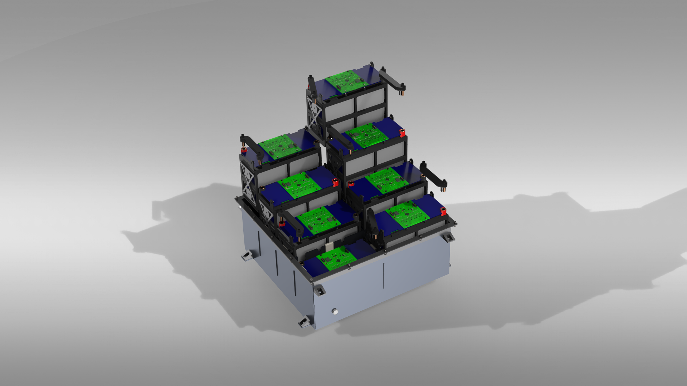
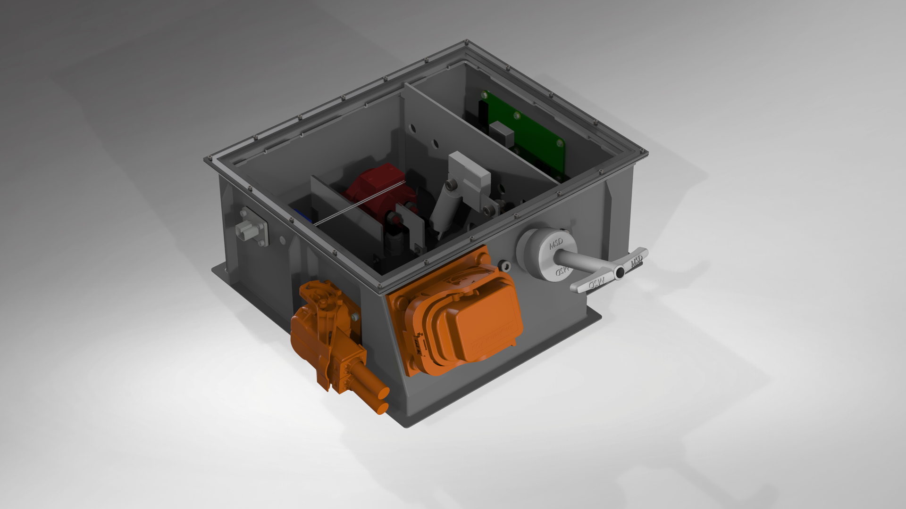

High-Voltage Battery Pack & Battery Management Enclosure

A mechanically integrated HV battery system designed for a new four-wheel-drive electric race car: welded 6061-T6 containment, mass-optimized chassis mounting, and a larger serviceable enclosure for battery management hardware. I owned the mechanical containment geometry, packaging, and enclosure interfaces; the cell substacks and electronic boards were developed by other team members.
System architecture & ownership
I designed the welded aluminum tractive battery container that protects and surrounds the cell substacks, as well as the separate battery management enclosure — including the arrangement of its COTS hardware and the mechanical mounting and connector interfaces. A teammate designed the cell substacks, and the electrical team owns the PCB designs. The redesign supports the vehicle's transition from rear-wheel drive to four-wheel drive while balancing Formula SAE requirements, mass, thermal constraints, waterproofing, chassis clearance, and serviceability.

Rules-driven container & mounting optimization
The container is built from 0.09-inch 6061-T6 aluminum panels — the applicable minimum sheet thickness — designed for welded construction against Formula SAE Structural Equivalency Spreadsheet (SES) requirements. I iteratively reduced the mounting-tab geometry and evaluated the redesign with FEA under the prescribed 40g lateral and 20g vertical acceleration load cases. Each tab is designed to be waterjet-cut, bent, and welded to the chassis; the container bolts into these tabs for removal and installation.
| Tab set | Before | After | Mass reduction | Updated-model SF |
|---|---|---|---|---|
| Front (2) | 329.68 g | 110.58 g | 66.5% | 1.081 |
| Rear (2) | 132.32 g | 64.73 g | 51.1% | 1.072 |
| Total (4) | 462.00 g | 175.31 g | 62.1% (286.69 g) | Min: 1.072 |
Safety factors are FEA predictions for the modeled load cases using the updated CAD substack mass estimate (with the more conservative SES mass estimate: 1.035 front / 1.026 rear). Full-container FEA and physical testing are not yet complete, so the container is not claimed to be structurally validated.

Cell packaging & passive cooling
The team evaluated whether passive heat rejection would be sufficient for the higher-capacity pack. Endurance-run thermal simulations predicted cell temperatures would remain below the 60 °C limit for the modeled operating conditions, so passive cooling was selected over a liquid system — avoiding extra weight and complexity and removing the need for ventilation openings through the waterproof container.
This result supports the cooling concept for the simulated endurance-run assumptions only; it does not establish that every operating condition has been validated or that cells can never exceed 60 °C.

Battery management enclosure: integration & serviceability
I designed the enclosure around the electrical team's boards and COTS devices, determining their locations and the interfaces needed to mount and connect them while balancing connector access, fastener reach, installation clearances, and chassis-tube avoidance. The redesigned internal cavity grew from ≈7.95 L to 15.00 L (an 88.7% increase, CAD internal-volume measurement). I produced a full-scale PLA fit-check print to verify COTS fit, bolt accessibility, and cutout sizing ahead of the intended ULTEM production.
The enclosure is designed for additive manufacturing in ULTEM, pending clarification of an applicable Formula SAE rule. The PLA fit check verifies geometry only — not final material performance or environmental qualification.

Build & validation timeline
-
RWD → 4WD redesign kickoff
Larger, heavier pack required; container and enclosure redesign scoped against updated battery architecture and FSAE rules.
-
FEA-driven mounting-tab optimization
286.7 g removed (62.1%) across four tabs; predicted safety factors of 1.081 (front) and 1.072 (rear) under 40g / 20g load cases.
-
Thermal trade study → passive cooling
Endurance-run simulations supported passive cooling under modeled conditions, preserving the waterproof, vent-free container.
-
Enclosure redesign & PLA fit-check print
Internal cavity enlarged 88.7%; full-scale PLA prototype verified COTS fit, fastener reach, and cutout sizing.
-
Container welding & procurement In progress (Oct 2026)
Container entering welding; busbars, grounding strips, and Garolite insulating dividers ordered.
-
ULTEM enclosure production Planned
Final ULTEM print pending clarification of an applicable Formula SAE rule.
-
Assembly & physical validation Planned
Welded-assembly inspection, pack assembly, and full physical validation remain future activities.